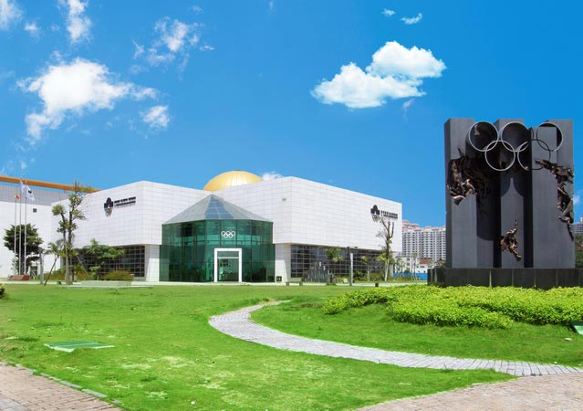
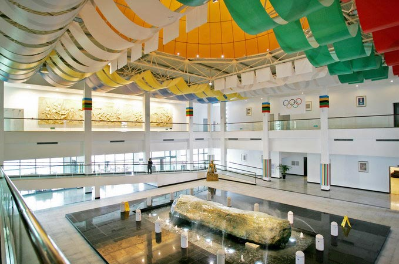
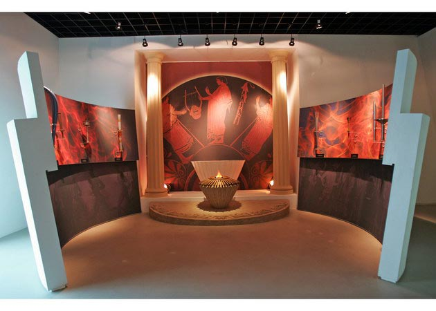
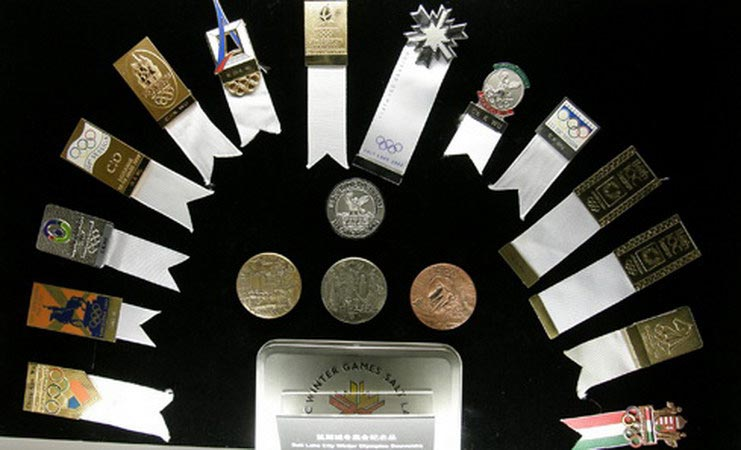
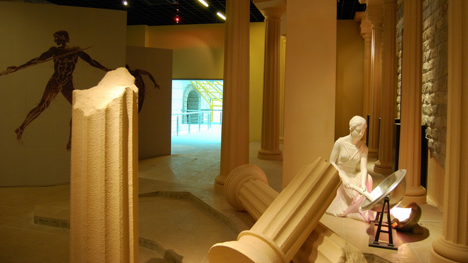

厦门奥林匹克博物馆是由国际奥委会和中国奥委会批准成立的中国第一家奥林匹克专题博物馆，也是国际奥林匹克博物馆联盟22家成员之一，为独立的国际化非盈利性公益机构。博物馆由国际奥委会委员、国际拳击联合会主席、世界著名建筑专家吴经国先生多年筹划、设计、创建并亲任馆长。馆内收藏了丰富的奥运会相关文物，旨在薪传奥林匹克文化、弘扬奥林匹克精神，让更多的人了解、感受和分享奥运的历史与辉煌。
博物馆呈开放结构，主体建筑分上下两层，设计上传承了瑞士洛桑奥林匹克博物馆的理念。馆内一层大厅为公共区域，配有多媒体报告厅、VIP会议室、咖啡休闲厅及中国唯一一家可以经营国际奥林匹克和历届奥运题材的特色纪念品商店；大厅中央有一重80吨的长江碧玉原石；二层由一个序厅和四个展厅组成，大部分展品为吴经国先生担任国际奥委会委员近30年来个人收藏的奥林匹克相关文物及纪念品，包括奥运火炬、奖牌、邮票、徽章、纪念币、吉祥物等共计11000余件。
博物馆主要功能是宣传奥林匹克文化并向公众展示奥林匹克历史及珍品文物，让公众了解到更多奥林匹克信息和知识，更近距离地接触奥林匹克。体会更快、更高、更强;使人超越自我、奋发向上的健康人生哲学及重在参与、公正、和平的奥林匹克精神理念。
 330445074@qq.com
330445074@qq.com 12345
12345